Phone style v1 — the audit
Every phone screen against the style sheet (design-refs/phone-style-v1/phone-style-v1.html), measured at 390 × 844 by PS1 in report mode. Today's Queries tab is built to the sheet and is the calibration: it reads zero. The full notes are in audit.md beside this page.
Screens by rule
| Screen | PS1-1 P8 · P12 sizes | PS1-2 P9 · P10 weights, the typewriter | PS1-3 P1 · P19 · P20 page, card corner and shadow | PS1-4 P15 the 16 gutter | PS1-5 P18 targets 48, rows 64 | PS1-6 P6 grey on the page | PS1-7 P5 one coloured card | PS1-8 one filled button | PS1-9 P21 dashes | PS1-10 rows in a card | total |
|---|---|---|---|---|---|---|---|---|---|---|---|
| Today · Queries (built to the sheet; the calibration) | · | · | · | · | · | · | · | · | · | · | 0 |
| Today · Agents | 4 | 4 | 6 | · | 3 | 3 | · | · | · | · | 20 |
| Today · Activity | · | 4 | · | 1 | · | 8 | · | · | · | 4 | 17 |
| To do | 2 | · | 4 | 1 | 98 | · | · | · | · | · | 105 |
| the task screen | 20 | 1 | 1 | 1 | 10 | 1 | · | · | · | 1 | 35 |
| Materials · Packages | 4 | 3 | · | · | · | 3 | · | · | · | 1 | 11 |
| Materials · Letters | 1 | · | · | 2 | · | 13 | · | · | · | 1 | 17 |
| Materials · Versions | 1 | · | · | · | · | 4 | · | · | · | 1 | 6 |
| Materials · Comps | 1 | · | 2 | · | · | 4 | · | · | · | 1 | 8 |
| Profile | · | · | 8 | · | · | · | · | · | · | · | 8 |
| the full query list | 1 | 176 | · | 4 | · | 156 | · | · | · | 88 | 425 |
| one query · Queried | 1 | 1 | 2 | 1 | · | · | · | · | · | · | 5 |
| one query · Partial | 1 | 2 | 4 | 2 | · | · | · | · | · | · | 9 |
| one query · Full | 1 | 1 | 2 | 1 | · | · | · | · | · | · | 5 |
| one query · Offer | 1 | 1 | 2 | 1 | · | · | · | · | · | · | 5 |
| one query · closed | · | 2 | 2 | 1 | · | 1 | · | · | · | · | 6 |
| the agent sheet | 1 | · | 1 | · | · | 1 | · | · | · | · | 3 |
| the + sheet | · | · | · | · | · | 5 | · | · | · | · | 5 |
| quick log | · | · | · | · | · | 5 | · | · | · | · | 5 |
| search | · | · | 4 | 1 | · | · | · | · | · | · | 5 |
| the full Birds-eye view | · | 4 | · | 4 | 34 | 4 | · | · | · | 17 | 63 |
| the gaps sheet | 2 | · | 1 | · | · | 1 | · | · | · | · | 4 |
| Settings | 9 | 3 | 4 | 3 | 1 | 1 | · | · | · | · | 21 |
| Settings · a section | · | · | 8 | · | · | · | · | · | · | · | 8 |
| set-up · a set-up step | 5 | 1 | 2 | 1 | 1 | · | · | · | · | · | 10 |
| account · sign-in | 4 | 2 | 1 | · | 1 | · | · | · | · | · | 8 |
| account · sign-up | 4 | 2 | 1 | · | 1 | · | · | · | · | · | 8 |
| the phone landing | 76 | 5 | 10 | 24 | 10 | · | · | · | · | · | 125 |
| pricing | 57 | 21 | 5 | 5 | 18 | · | · | · | 1 | · | 107 |
Proposed roll-out order
| # | Screen(s) | Size | What would visibly change |
|---|---|---|---|
| 1 | Today · Agents and Activity (finish Today) | small | The agent summary's figures become tiles; List health and Lately sit in white cards under page headings; the feed's dates leave the typewriter for 14 system; Lately's rows go into a card (4 loose today). |
| 2 | To do | medium | The card's corners 24 → 16; the title 32 → 28; the 98 "Then" rows grow from 60 to 64 and sit in one card; a press state on the rows and the card's two buttons. The throttled reload jumps (layout shift 1.2): the loading shapes P26 asks for. |
| 3 | The full query list | medium | Rows into a card per group (88 loose); names 700 → 600 (176); the grey count and status text off the oat (156); the headline 24 → 28. Repeated rows, so one change each. The reload jumps (0.44). |
| 4 | One query (every state) | medium | The bubbles' corners 18 → 16; their dates leave the typewriter (14 → system); the filled button 56/17 → 48/16 (the sheet's); the bubbles keep the 16 gutter. |
| 5 | The full Birds-eye view | medium | Rows 27 → 40 inside a card, as on Today; the group headings leave the typewriter; the grey counts off the oat. |
| 6 | The task screen | large | Twenty off-scale sizes (13, 17, 18 …) onto the six; ten small targets (the 44 close ring, chips) to 48; the tiles' shadow to the card's; the footer copy off the oat. |
| 7 | Materials (four tabs) | small | The header line 17 → 16; the tab labels and empty-state text off the oat; the package row into its card; the comps list's corners 24 → 16. |
| 8 | The sheets: + sheet, quick log, agent sheet, gaps, search | small | Their grey text now sits on the oat (the sheets take the page colour): it goes ink or the darker grey, or onto white cards; the search field's corners; the agent sheet's 56 button → 48. |
| 9 | Profile and Settings | small | Card corners 24 → 16 (8 on Profile, 8 on a Settings section); Settings' headings and sizes onto the six; the 13 holding-value insets take their sheet colours (white, --ps-fill, --ps-press). |
| 10 | Set-up and account screens | small | The wordmark 18.5 and the typewriter "Skip for now" / "Sign in" (14.5, 19) onto the six and the system font; the 44 exit link to 48. |
| 11 | The phone landing and pricing | large | A different tier (marketing). 76 and 57 off-scale sizes, weight 700 in the nav, the 16 gutter. A question first: do the public pages follow the app's phone sheet at all? |
The screens
Rules PS1 cannot measure (P2, P3, P4, P7, P11, P13, P14, P16, P17) are read by eye from these shots.

0 breaches · none
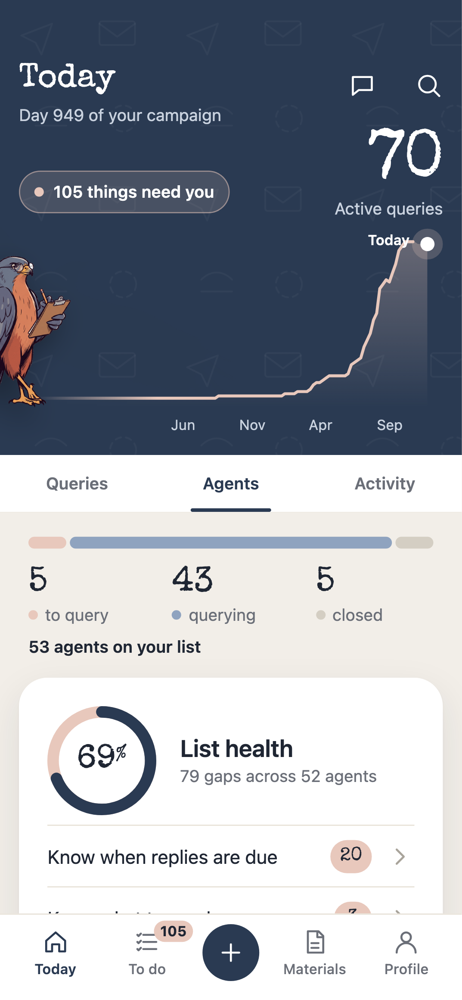
20 breaches · PS1-1 4 · PS1-2 4 · PS1-3 6 · PS1-5 3 · PS1-6 3
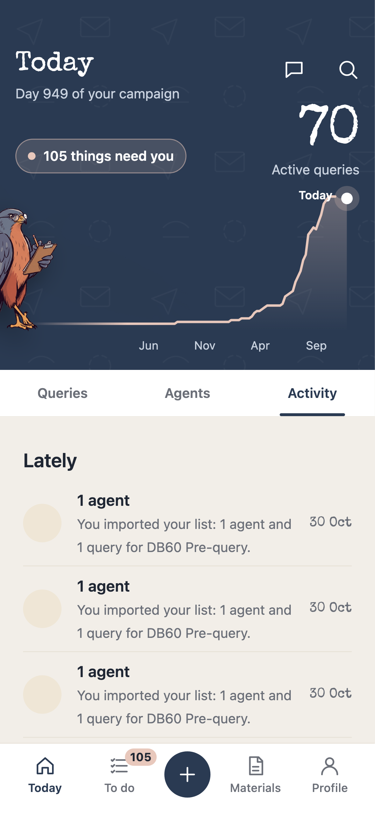
17 breaches · PS1-2 4 · PS1-4 1 · PS1-6 8 · PS1-10 4
105 breaches · PS1-1 2 · PS1-3 4 · PS1-4 1 · PS1-5 98
35 breaches · PS1-1 20 · PS1-2 1 · PS1-3 1 · PS1-4 1 · PS1-5 10 · PS1-6 1 · PS1-10 1
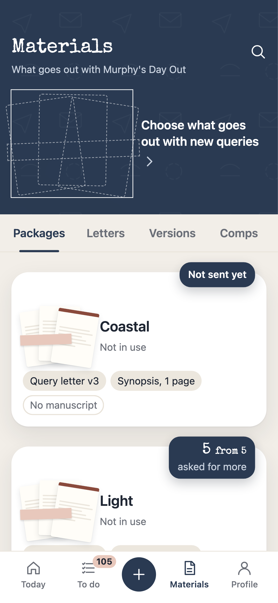
11 breaches · PS1-1 4 · PS1-2 3 · PS1-6 3 · PS1-10 1
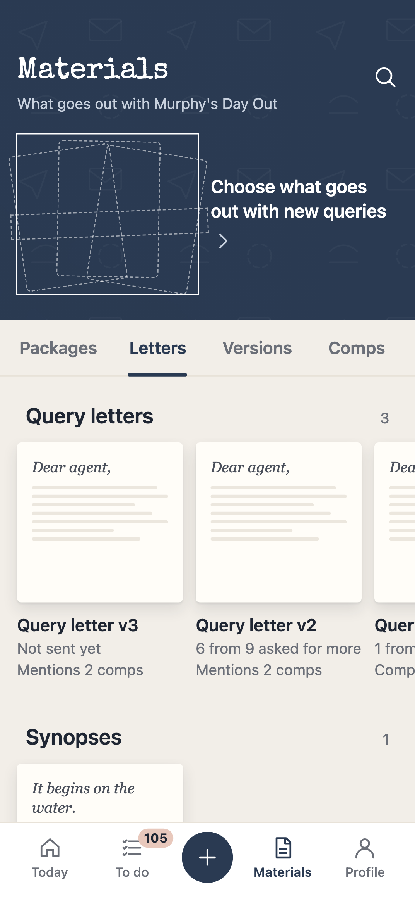
17 breaches · PS1-1 1 · PS1-4 2 · PS1-6 13 · PS1-10 1
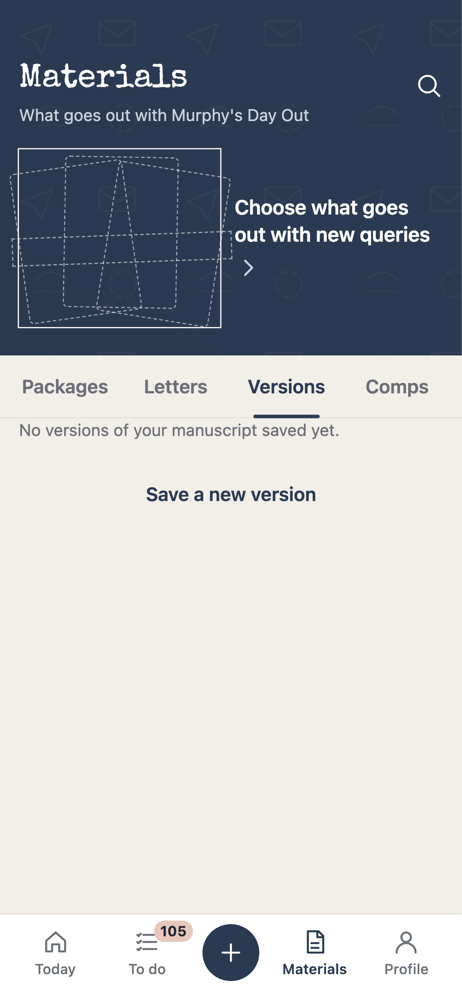
6 breaches · PS1-1 1 · PS1-6 4 · PS1-10 1
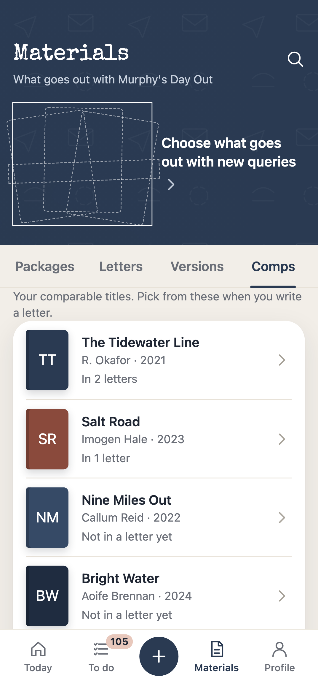
8 breaches · PS1-1 1 · PS1-3 2 · PS1-6 4 · PS1-10 1
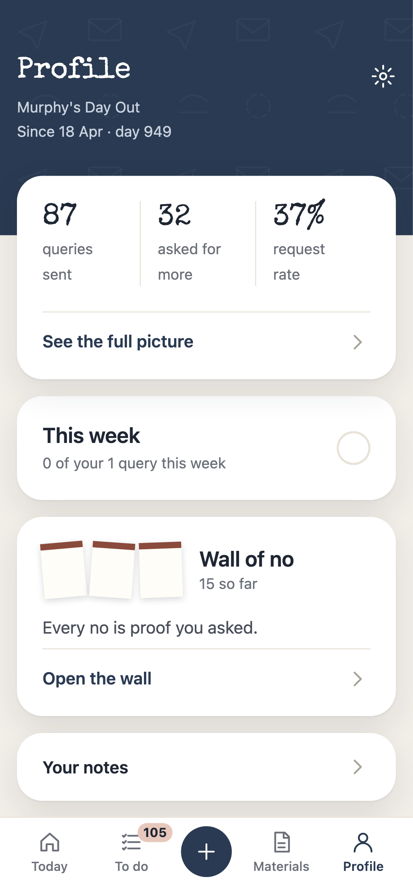
8 breaches · PS1-3 8
425 breaches · PS1-1 1 · PS1-2 176 · PS1-4 4 · PS1-6 156 · PS1-10 88
5 breaches · PS1-1 1 · PS1-2 1 · PS1-3 2 · PS1-4 1
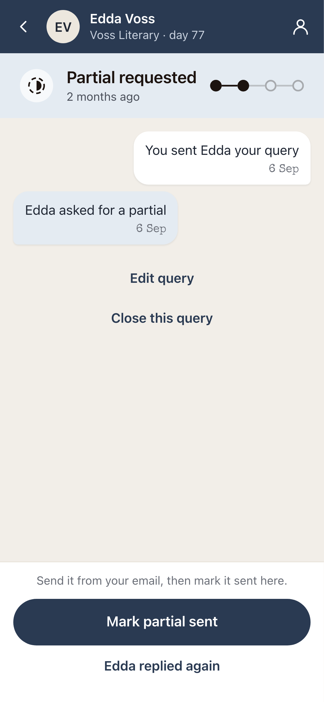
9 breaches · PS1-1 1 · PS1-2 2 · PS1-3 4 · PS1-4 2
5 breaches · PS1-1 1 · PS1-2 1 · PS1-3 2 · PS1-4 1
5 breaches · PS1-1 1 · PS1-2 1 · PS1-3 2 · PS1-4 1
6 breaches · PS1-2 2 · PS1-3 2 · PS1-4 1 · PS1-6 1
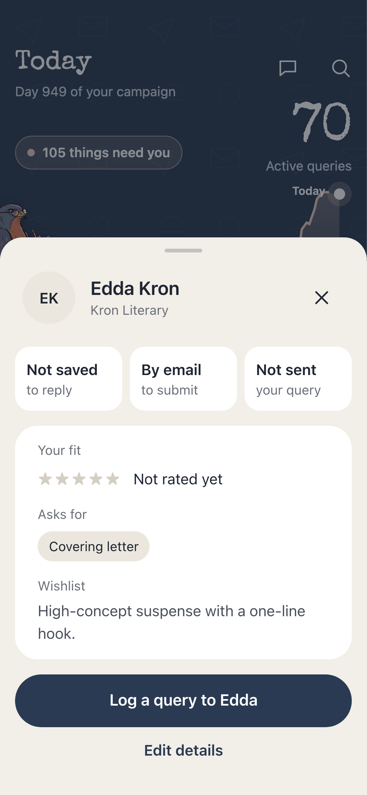
3 breaches · PS1-1 1 · PS1-3 1 · PS1-6 1

5 breaches · PS1-6 5
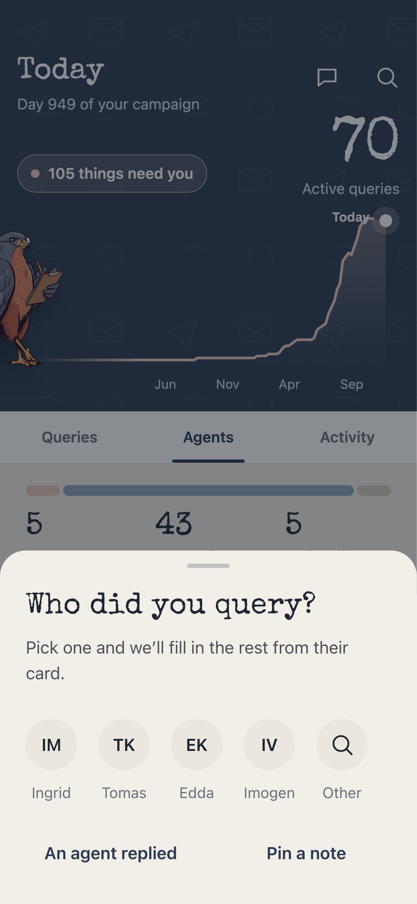
5 breaches · PS1-6 5
5 breaches · PS1-3 4 · PS1-4 1
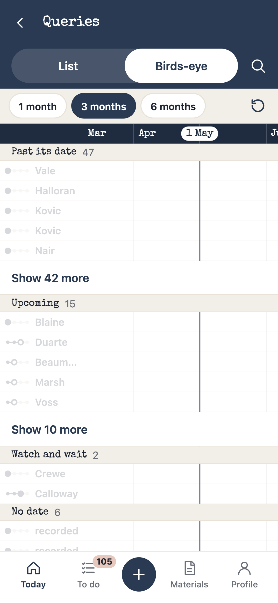
63 breaches · PS1-2 4 · PS1-4 4 · PS1-5 34 · PS1-6 4 · PS1-10 17
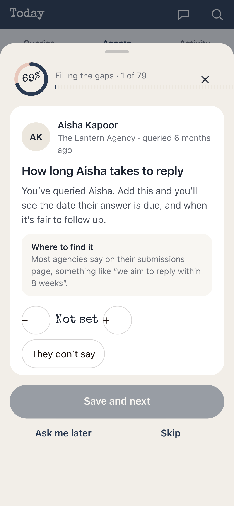
4 breaches · PS1-1 2 · PS1-3 1 · PS1-6 1
21 breaches · PS1-1 9 · PS1-2 3 · PS1-3 4 · PS1-4 3 · PS1-5 1 · PS1-6 1

8 breaches · PS1-3 8
10 breaches · PS1-1 5 · PS1-2 1 · PS1-3 2 · PS1-4 1 · PS1-5 1
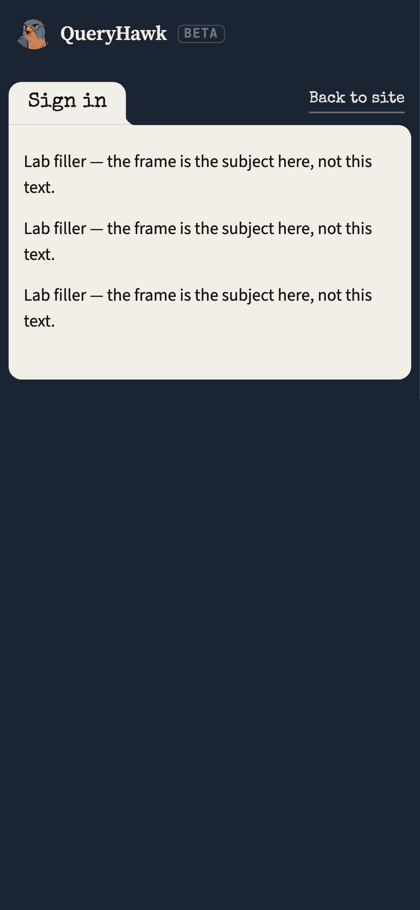
8 breaches · PS1-1 4 · PS1-2 2 · PS1-3 1 · PS1-5 1
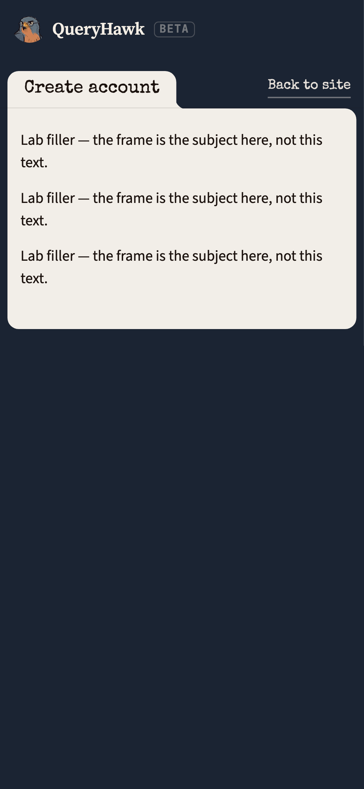
8 breaches · PS1-1 4 · PS1-2 2 · PS1-3 1 · PS1-5 1
125 breaches · PS1-1 76 · PS1-2 5 · PS1-3 10 · PS1-4 24 · PS1-5 10
107 breaches · PS1-1 57 · PS1-2 21 · PS1-3 5 · PS1-4 5 · PS1-5 18 · PS1-9 1